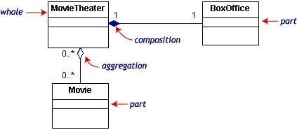
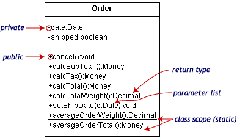
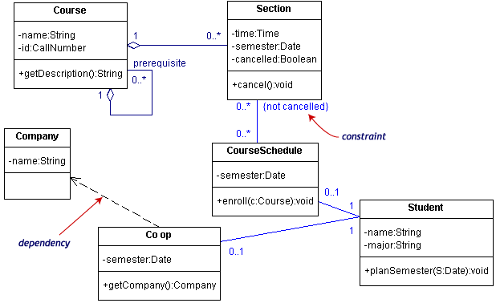
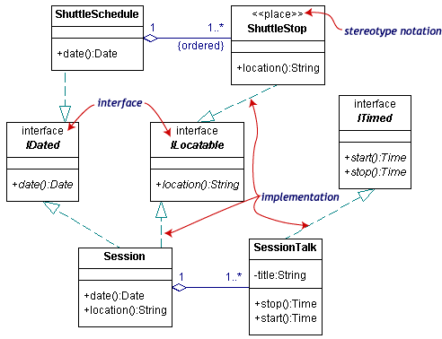
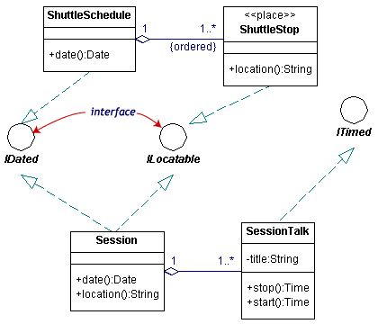

All class diagrams have classes, links, and multiplicities. But a class diagram can show even more information. We've already looked at generalization, aggregation, and navigability. In this page, we will look at these additional items as well.
Composition and aggregation
Associations in which an object is part of a whole are aggregations. Composition is a strong association in which the part can belong to only one whole -- the part cannot exist without the whole. Composition is denoted by a filled diamond at the whole end.
This diagram shows that a BoxOffice belongs to exactly one MovieTheater. Destroy the MovieTheater and the BoxOffice goes away! The collection of Movies is not so closely bound to the MovieTheater.

Class information: visibility and scope
The class notation is a 3-piece rectangle with the class name, attributes, and operations. Attributes and operations can be labeled according to access and scope. Here is a new, expanded Order class.

The illustration uses the following UML™ conventions.
| Symbol | Access |
|---|---|
|
|
public |
|
|
private |
|
|
protected |
Dependencies and constraints
A dependency is a relation between two classes in which a change in one may force changes in the other. Dependencies are drawn as dotted lines. In the class diagram below, Co_op depends on Company. If you decide to modify Company, you may have to change Co_op too.

A constraint is a condition that every implementation of the design must satisfy. Constraints are written in curly braces { }. The constraint on our diagram indicates that a Section can be part of a CourseSchedule only if it is not canceled.
Interfaces and stereotypes
An interface is a set of operation signatures. In C++, interfaces are implemented as abstract classes with only pure virtual members. in Java, they're implemented directly.
The class diagram below is a model of a professional conference. The classes of interest to the conference are SessionTalk, which is a single presentation, and Session, which is a one-day collection of related SessionTalks. The ShuttleSchedule with its list of ShuttleStops is important to the attendees staying at remote hotels. The diagram has one constraint, that the ShuttleStops are ordered.

There are three interfaces in the diagram: IDated, ILocatable, and ITimed. The names of interfaces typically begin with the letter I. Interface names along with their (abstract) operations are written in italics.
A class such as ShuttleStop, with operations matching those in an interface, such as ILocatable, is an implementation (or realization) of the interface.
The ShuttleStop class node has the stereotype << place>>. Stereotypes, which provide a way of extending UML, are new kinds of model elements created from existing kinds. A stereotype name is written above the class name. Ordinary stereotype names are enclosed in guillemets, which look like pairs of angle-braces. An interface is a special kind of stereotype.
There are two acceptable notations for interfaces in the UML. The first is illustrated above. The second uses the lollipop or circle notation.

In circle notation, the interfaces are circles with lines connected to the implementing classes. Since it is more compact but leaves out some detail, the lollipop notation simplifies the original diagram.

Copyright © 2003 Borland Software Corporation. All rights reserved.